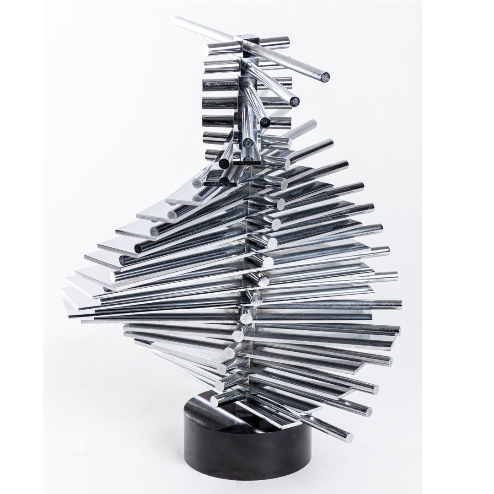

Minoretti nasce nel 1938 e già dal 1957 è presente in varie mostre locali, nazionali e internazionali presso l’associazione delle Belle Arti di Como, dove frequentò anche il gruppo degli astrattisti. In questo periodo vive e lavora ad Arcellasco. Nel 1967-68 viene invitato al premio San Fedele di Mirano, al quale partecipa con opere concretiste che possono appartenere alla corrente Madì alla quale aderisce negli anni ‘90. Le sue prime opere inoggettive vengono realizzate nel 1966, periodo a cui appartiene anche l’opera in oggetto (1984). Nel 1970 Minoretti organizza la sua prima mostra personale alla galleria Il Giorno a Milano, con le sue opere principali. Alla fine degli anni ’70 cerca un proprio carattere artistico pittorico e scultoreo. Negli anni ‘90, dopo aver frequentato a lungo la storica Galleria Arte Struktura di Milano, entra a far parte del gruppo Internazionale Madì partecipando attivamente a tutte le manifestazioni del gruppo, contribuendo così alla creazione di opere riconosciute come di grande rilevanza artistica per questa corrente.

Il soggetto principale delle opere di Minoretti è la linea, e studia la relazione di questa nello spazio. All’interno delle sue opere, sia pittoriche sia scultoree, questa viene riproposta in maniera nuova e diversa rispetto altri artisti in quanto Minoretti desidera darle tridimensionalità e farla uscire dagli spazi fino a quel momento a lei assegnati. Infatti decide, superato l’astrattismo classico dagli anni ‘70, di scegliere sempre la linea come protagonista della sua opera di studio. Le sequenze lineari, singole o sovrapposte, hanno l’intento di rimarcare la continuità del tempo, ma contemporaneamente percepirne la tridimensionalità, permettendo alle figure geometriche di venirne esaltate. L’opera è composta da varie lamine in ottone lucido, fissate attorno ad un perno rotante. Le lastre e i tondini hanno lunghezze e larghezze diverse creando comunque una proporzione geometrica nella loro posizione di partenza rispetto all’asse verticale. Il perno permette al fruitore una modificazione continua dell’opera che in questo modo diviene cinetica e mai uguale a se stessa.